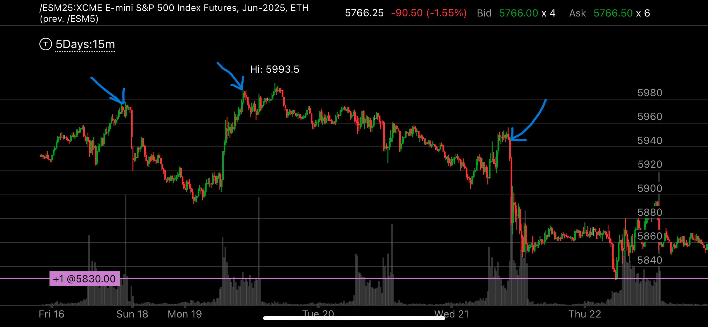

一个大型走势反转时候，发生了什么？
- 发生了超买
- 发生了小的加速，但是没有跨域
- 加速后，发生了跨越，但是没有加速
- 发生跨越后，出现了相对弱势
- 下跌过程中， 出现了可疑的下跌加速。
- 这个不是整体反转，而是第四浪的开始，所以才用这种方式，但是这种情况也是非常重要的，因为它回头的幅度很大

图示:
- 蓝色箭头代表超买了，而且这时已经越过了5700点，这个点是上次加速的位置。
- 红色箭头出现了加速走势，但是这个走势没有出现跨越，它只是在自己范围内跨越。但是加速本身已经说明了它快要反转了
- 黄色箭头代表相对弱势，它前面下跌很快，而这里创了新高，下跌很慢，形成相对弱势
- 两个绿色箭头，代表了它似乎在下跌出现了加速，但是，它还没有大跌，所以这个不是最后阶段， 而且他在前面已经酝酿了很久
从时间上看，并没有加速

图示:
- 三个蓝箭头，代表了它出现了相对弱势，最后快速下跌，并不是加速走势。

图示:
- 蓝色箭头是一个小的加速上涨，但是它不能标识一个本地的反转，因为它的模式太小，而且和更大的加速相反。
- 蓝色箭头后面，从5600到5700也是一个小的向上加速，但是仍然无法扭转趋势，因为它处于更大的加速向下反转过程中。

图示:
- 蓝色箭头是一个小的加速上涨，但是它高于5860这个点，并没有跨越前面的范围，所以其实不是一个加速走势。它应该低于5800附近才算

图示:
- 蓝色和红色箭头都是加速向上的走势，但是因为模式太小了，而且没有跨越前面的范围，所以不能是一个真实的加速，它后面仍然继续上涨